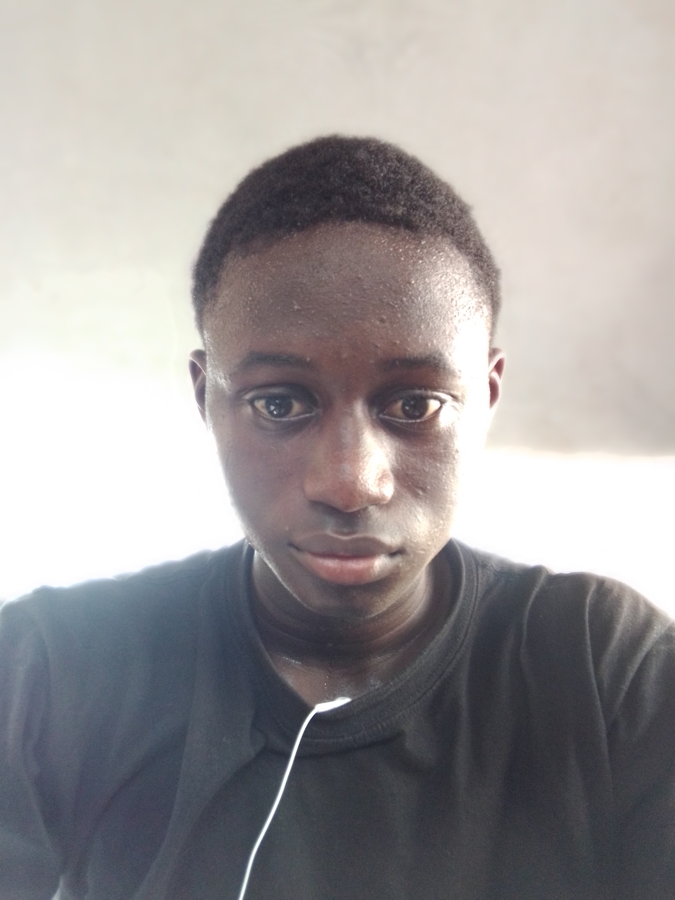
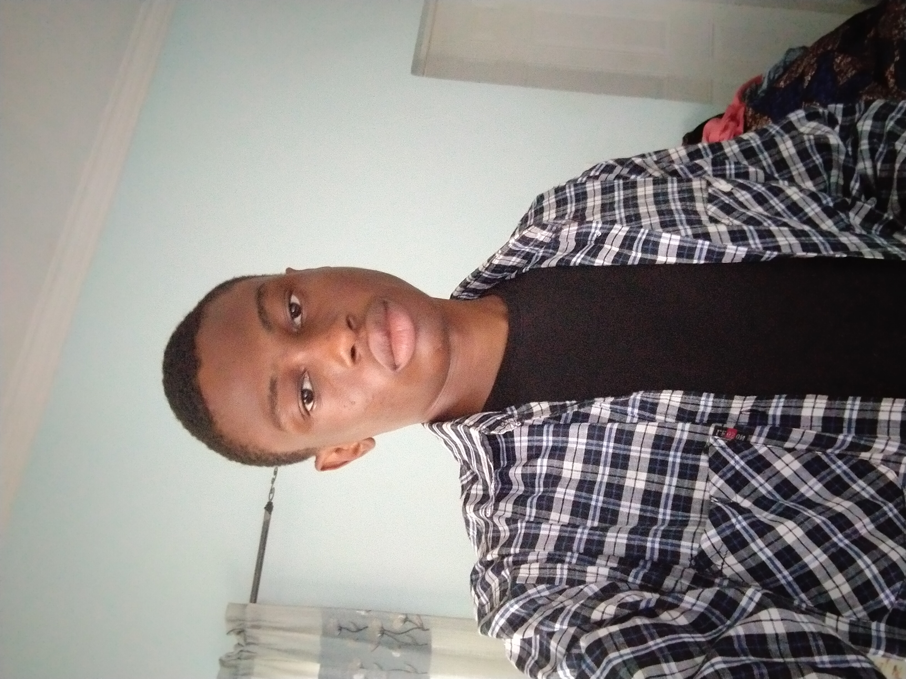

PERSONAL LIFE
My name is Nnamdi Uzoigwe G. The G stands for God'swill(I am a devout
christian). I am the last child in a family of 3 boys and a girl. My
siblings are all grown up and i am growing up too. I am from Abia state in
Nigeria which makes me Igbo, one of the three major ethnic groups in
Nigeria and i reside in the Nation's capital Abuja.
I am single and not married, my height is 1.65m and i weigh 45kg.

EDUCATION
I am currently an undergraduate in the University of Calabar, Cross-rivers
state and studying Computer science. This is what i've always been
passionate about, asided Maths(I love maths). I used to draw and paint a
lot when i was little till i got into science and things kinda changed.
HOBBIES
I love watching movies, learning new things, listening to cool songs that
uplift the spirit, and football. Speaking of football, i love to play and
watch. My favorite football club is Manchester City(Strong Cityzen you've
got here) and my favorite player in the world is
Kevin De bruyne. I honestly hope to meet him someday. P.S I admire Kevin because hegives
his all on the pitch,is the best midfielder in the world right now and one
of the greatest playmakers of all time, coupled with the fact that he's so
calm and composed.

Another thing i love to do is travel. Anything that will make me move from
one point to another gets me hyped. This usually presents an oportunity
for me to observe nature and be awed by its maker.
CAREER ASPIRATIONS
I'd really love to be a software developer in the coming years and i am
doing my best to remain on that trajectory or career path although i'm
open to any area of Computing. If i choose to further my studies, it will
be geared towards something related to Robotics and Artificial
Intelligence. For the past two years ive been coding and i can confidently
say that i still have a long way to go till i get there lol. Well, One
step at a time, sky's the limit!
EXTRAS
My favorite foods are fried rice with salad and any extras on it, Native
dishes like egwusi soup and Abacha that is indigenous to the Igbos. I love
cake and bread or anything that carries the name.
My favorite colour is white. I want my personality to be just like that
colour. I used to be into blue, then overtime i dropped it for black and
now its white. Any of these three colours will do.
My dream countries(countries i will love to visit) are the US and Georgia.
USA becuase ive always loved the culture, environment and the people that
the media portrayed and Georgia becuase the people love bread-its infact
their main food. I love bread and possibly they'll welcome me into the
country with a good meal and bread!